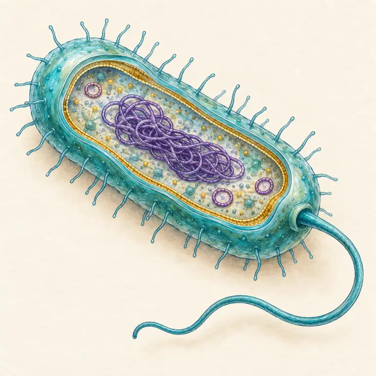
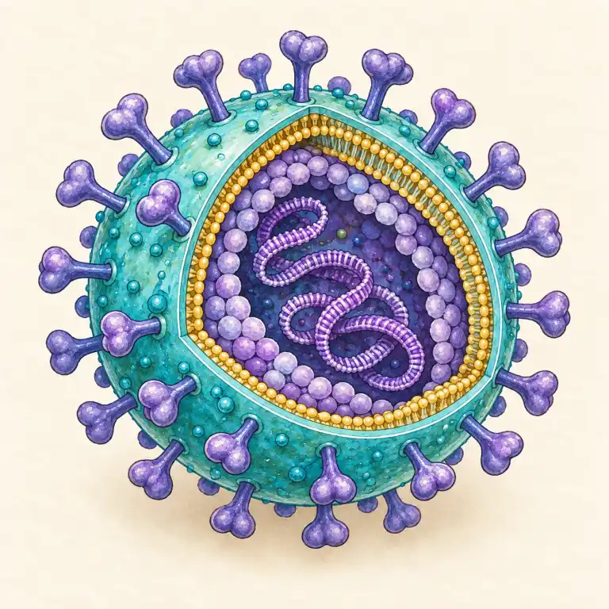
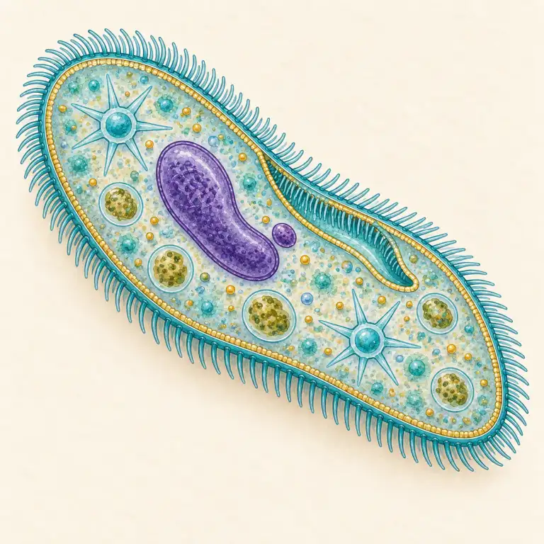
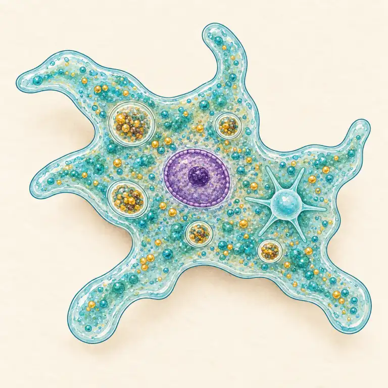
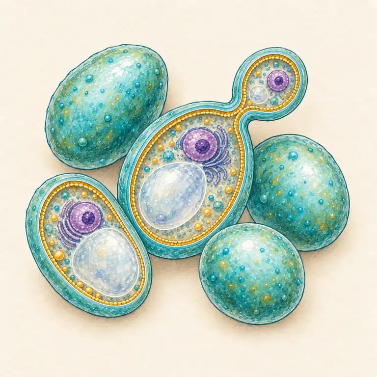

Pro 6. ročník: mikrosvět, rozdíl mezi virem a bakterií, prevence nákazy.
Jde o zvětšené výukové modely, ne mikrofotografie. Každý zvýrazňuje znaky důležité pro rozlišení.

Buňka bez pravého jádra; DNA je volně v cytoplazmě.

Není to buňka a bez hostitele se nedokáže množit.

Jednobuněčný prvok; pohybuje se pomocí brv.

Mění tvar a panožkami se pohybuje i přijímá potravu.

Jednobuněčná houba; na obrázku je vidět pučení.
Bakterie jsou jednobuněčné organismy bez jádra – množí se dělením a některé jsou pro nás užitečné. Viry nejsou buňky, samy se rozmnožovat neumí a potřebují hostitele. Na viry antibiotika nezabírají.